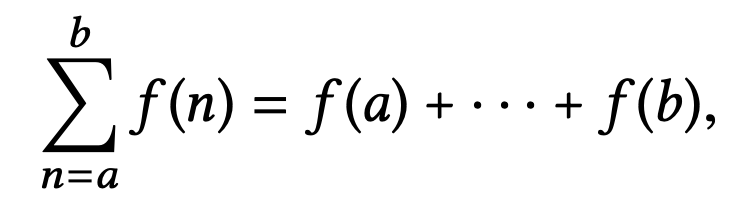

- Published on
SICP: Formulating Abstractions with Higher-Order Procedures
- Authors
-
-

- Name
- nenjotsu
-
Table of Contents
앞서 봤던 프로시저들은 특정 숫자를 직접 정하지 않고, input으로 받은 그 숫자에 대한 복합적인 연산을 표현하는 정도의 abstraction이었다.
다음과 같은 프로시저가 그렇다.
(define (cube x) (* x x x))
우리는 **어떤 특정한 숫자의 세제곱(cube)**을 이야기하는 것이 아니라, **어떤 숫자든 세제곱을 구하는 방법(방법론)**에 대해 이야기하고 있다.
위와 같은 procedure가 없더래도 (* 3 3 3), (* x x x), (* y y y)처럼 그냥 직접 곱셈 연산을 이용해서 값을 구하면 된다. 근데 이건 엄청난 단점을 초래한다.
직접 연산자를 사용한다면 항상 **기본적인 연산자(primitive operations, 여기서는 곱셈)**만을 사용해야 하기 때문에 **더욱 높은 수준의 연산(higher-level operations)**을 할 수 없다.
Powerful programming language는 common patterns를 가진 것에 이름을 주고(abstraction), 그 이름으로 기능을 사용할 수 있어야 한다.
이것이 바로 대부분의 프로그래밍 언어가 프로시저를 정의하는 기능을 포함하는 이유이다.
즉, **“반복적으로 사용되는 연산을 추상화(Abstraction)하여 이름을 붙이고, 이후에는 그 이름만으로 개념을 표현할 수 있도록 하는 것”**이 프로시저의 핵심 역할이다.
Procedure에서 산수 문제만 따져봐도 해당 프로시저가 paramter로 숫자만 받을 수 있다면 추상화를 만드는 능력이 현저하게 제한될 것이다. 프로그래밍을 하다 보면 비슷한 패턴의 코드(프로그래밍 패턴)를 여러 개의 프로시저와 함께 사용해야 하는 경우가 많다.
이런 패턴을 하나의 개념으로 표현하려면, 프로시저를 argument로 받을 수 있거나, procedure을 return 값으로 받을 수 있는 procedure을 만들어야 한다.
이처럼 다른 프로시저를 입력값으로 받거나 반환할 수 있는 함수를 **고차 함수(higher-order procedures)**라고 한다.
higher-order procedures도 functional programming 원칙 중 하나라서 알고 가야한다. 우리가 흔하게 접하는 클로저도 사실 고차 함수의 원칙을 고수하는 것 중에 하나라고 볼 수 있다.
Procedures as Arguments
다음 세 개의 프로시저를 살펴보자.
(define (sum-integers a b)
(if (> a b)
0
(+ a (sum-integers (+ a 1) b))))
위는 a부터 b까지의 합을 구하는 프로시저다.
(define (sum-cubes a b)
(if (> a b)
0
(+ (cube a)
(sum-cubes (+ a 1) b))))
위는 a부터 b까지의 모든 정수의 세제곱을 더하는 프로시저다.
(define (pi-sum a b)
(if (> a b)
0
(+ (/ 1.0 (* a (+ a 2)))
(pi-sum (+ a 4) b))))
위는 다음과 같은 역할을 하는 프로시저다.
이 값은 π / 8에 수렴하는 프로시저다.
위 3개의 프로시저가 같은 계산 방법을 쓰고 있음을 알아챌 수 있다. a를 받아서 계산하는 함수, a 다음 값을 얻어내는 함수만 다르고 나머지는 거의 같다.
이는 다음과 같은 template을 생각해볼 수 있다.
(define (<name> a b)
(if (> a b)
0
(+ (<term> a)
(<name> (<next> a) b))))
이렇게 여러 프로시저에 동일한 계산법을 쓰고 있다는 것은 이거를 absctraction하게 쓸 수 있는 프로시저가 나올 수 있음을 확인할 수 있다. 위의 예제가 해당하는 것이 바로 sigma 즉, 시그마 notation이다. 수열의 덧셈을 하는 방법으로 사용할 수 있다.

시그마는 아무 수열의 덧셈 값을 나타낸다는 걸 바로 나타낼 수 있기에 쓸모가 많다.
마찬가지로 프로그래밍에서도 이러한 표현 능력을 갖춘다면 더할 나위 없이 좋다. 따라서 아래와 같이 만들어볼 수 있다.
(define (sum term a next b)
(if (> a b)
0
(+ (term a)
(sum term (next a) next b))))
sum은 a, b, term, next를 받고 각각 lower bound, upper bound, 계산할 항을 결정하는 함수, 다음 항을 결정하는 함수로 쓸 수 있다.
이 프로시저는 어떤 연산을 수행할지(term), a를 어떻게 증가시킬지(next)를 추상화한 것이다.
sum을 사용하는 방법은 일반적으로 프로시저를 사용하는 방법과 같다.
(define (inc n) (+ n 1))
(define (sum-cubes a b)
(sum cube a inc b))
(sum-cubes 1 10)
>
3025
이 sum-cubes를 사용하면 1부터 10까지의 정수를 모두 세제곱하고 더한 값을 얻을 수 있다.
만약 그냥 일반적인 sum으로 사용하고 싶다면 다음과 같이 작성할 수도 있다.
(define (identity x) x)
(define (inc x) (+ x 1))
(sum identity 1 inc 10)
>
55
Constructing Procedures Using lambda
위에서 살펴본 sum 프로시저에 term과 next에 해당하는 프로시저를 계속 만들어내는 것은 아주 귀찮은 일이 아닐 수 없다.
프로시저를 정의(define)하는 대신 ‘argument에 4를 더해서 output을 내주는 것’ 이렇게 곧바로 나타낼 수 있다면 편하다.
여기서 배울 lambda가 이를 도와준다.
(lambda (x) (+ x 4))
(lambda (x) (/ 1.0 (* x (+ x 2))))
이렇게 사용할 수 있다.
예제:
(define (sum-cubes a b)
(sum
(lambda (x) (* x x x))
a
(lambda (x) (+ x 1))
b))
위에서 표현한 식의 경우 앞서 얘기한 sum-cubes와 동일하다.
lmabda는 define으로 프로시저를 정의한 것과 크게 다르지 않으나, 프로시저에 이름을 따로 붙여서 정의하지는 않는다.
Using let to create local variables
프로시저를 만들 때 argument로 받는 변수 뿐만 아니라 프로시저 안에서 사용할 변수를 만들어야 할 때도 있다. 이렇게 프로시저 안에서 사용하는 변수는 local variables라고 부를 수 있다.
f(x, y) = x(1 + xy)^2 + y(1 - y) + (1 + xy)(1 - y)
위 식에서 반복하는 걸 줄이면 다음과 같다.
a = 1 + xy
b = 1 - y
f(x, y) = xa^2 + yb + ab
이처럼 a, b같은 local variable로 정의해서 사용하면 깔끔하게 식을 얻을 수 있다.
(define (f x y)
(define (f-helper a b)
(+ (* x (square a))
(* y b)
(* a b)))
(f-helper (+ 1 (* x y))
(- 1 y)))
f-herlper라는 프로시저를 만드는 대신에 lambda를 사용해서 anonymous procedure로 나타낼 수도 있다.
(define (f x y)
((lambda (a b)
(+ (* x (square a))
(* y b)
(* a b)))
(+ 1 (* x y))
(- 1 y)))
프로시저를 만들 때는 이런 형태가 자주 나올 수 있기 때문에 좀 더 편하게 만들 수 있는 게 바로 let이다.
(define (f x y)
(let ((a (+ 1 (* x y)))
(b (- 1 y)))
(+ (* x (square a))
(* y b)
(* a b))))
일반적인 형태의 let 표현은 다음과 같다.
(let ((<var1> <exp1>)
(<var2> <exp2>)
. . .
(<varn> <expn>))
<body>)
let 문법에서 처음 나오는 건 name-expression pair에 해당하는 리스트다. 이 리스트에 있는 모든 name이 그에 대응하는 expression을 계산한 값으로 정의가 된다. 그리고 let의 body에서는 local variables로 bound된 name들을 가지고 식을 계산하게 된다.
((lambda (<var1> . . . <varn>)
<body>)
<exp1>
. . .
<expn>)
결국 이는 lambda와 다를 게 없다. 위에서 얘기했듯이 let으로 더 편하게 만든 것이나 마찬가지이다.
Procedures as Returned Values
우리는 지금까지 higher-order procedures를 알아보면서 arguments에 프로시저를 받아 쓸 수 있고, 이는 언어의 표현력이 크게 늘어난다는 사실을 알게 됐다. 마찬가지로 프로시저 또한 프로시저의 return 값으로 돌려줄 수 있다면 언어의 표현력을 더욱 끌어올릴 수 있지 않을까?
Newton’s method
앞서 살펴봤던 제곱근(square-root)에서 Newton의 방법을 살펴본 바 있다. 정확히는 Newton의 방법에 근거해 만들어진 방법이다.
뉴턴의 방법은 뭘까?
- 함수
f(x)의 해를 찾고 싶다. 즉,f(x) = 0이 되는x의 값을 찾는 게 목표다. - 어떤 초기 추정값
x0를 정한다. x0에서 접선을 이용해서 더 좋은 추정값x1을 구한다.- 이 과정을 반복해서 더 정확한 근사값을 찾는다.
x.n+1 = x.n - f(x.n) / f'(x.n)
x.n = 현재 추정 값
f(x.n) = 함수 값
f'(x.n) = 도함수(기울기) 값
x.n+1 = 새로운 추정값
위를 반복했을 때 점점 더 정확한 해를 얻을 수 있다.
뉴턴의 방법을 프로시저로 나타내려면 먼저 미분f'(x.n)을 표현해야한다.
(define (deriv g)
(lambda (x)
(/ (- (g (+ x dx)) (g x)) ; f(x+dx) - f(x)
dx))) ; 나누기 dx
(define dx 0.00001)
deriv 프로시저는 g라는 프로시저를 받아서 그 프로시저의 미분을 근사적으로 계산하는 새로운 프로시저 lambda를 반환한다.
Abstractions and first-class procedures
프로그래밍 언어에서는 계산 과정에서 어떤 기능을 어떻게 다루어야 하는지 여러 가지의 제약을 걸어 둔다. 가장 제약이 적은 것을 흔히 first-class에 속한다고 한다.
first-class가 가지는 특징은 다음과 같다.
- 변수의 값이 될 수 있다. 다시 말해, 이름을 부여할 수 있다.
- 프로시저의 인자(argument)로도 쓸 수 있다.
- 프로시저의 결과(return) 값으로도 만들어질 수 있다.
- 데이터 구조 속에 넣을 수 있다.
정리
- 고차 함수(Higher-Order Procedures): 함수를 인자나 결과로 사용.
- 예:
(define (compose f g) (lambda (x) (f (g x)))).
- 일급 객체(First-Class Citizens): 함수를 변수에 저장, 전달 가능.
- 예:
(define sq (lambda (x) (* x x))).
- 람다(Lambda): 이름 없는 함수로 즉석에서 정의.
- 예:
(lambda (x) (+ x 1)).
- 추상화 패턴: 반복되는 계산을 일반화.
- 예:
(define (sum term a next b) ...)로 합계나 곱셈 통합.
- 수치적 응용: 제곱근(뉴턴 방법), 고정점(fixed point).
- 예:
(define (sqrt x) (fixed-point (lambda (y) (/ x y)) 1.0)).